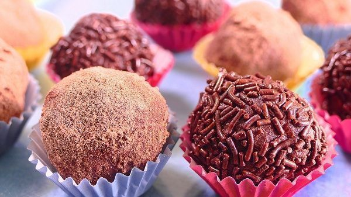

Volver
Recetas fáciles
Arroz con Leche

Ingredientes para 4 personas:
- 100g de arroz redondo
- 1l de leche entera
- 1 trozo de cáscara de limón y de naranja
- 1 rama de canela
- canela en polvo
- 70g de azúcar
- 10g de mantequilla
Preparación:
- En una olla o cazuela, ponemos la leche, el arroz, las cáscaras de los cítricos y la rama de canela. Calentamos a fuego medio mientras no dejamos de remover
- Cuando esté caliente, pero que no llegue a ebullición, pues la leche pasados los 90-100ºC se quema y coge un regusto muy desagradable, dejamos cocer. Removemos cada cinco minutos, para asegurarnos que el arroz no se pegue y para liberar su almidón. Así nos quedará más cremoso esta receta de arroz con leche. Recuerda que no debe llegar a hervir a borbotones fuertes en ningún momento
- Pasados unos 45 minutos, cuando el arroz esté casi hecho – recuerda remover cada 5 – añadimos el azúcar. Dejamos cocinar 10 minutos más, hasta que el arroz ahora sí que sí, esté bien blando
- Apagamos el fuego y añadimos la mantequilla. Quitamos las cáscaras y la canela en rama y mezclamos bien. Dejamos templar. Sigue mezclando de vez en cuando mientras lo dejes templar, para que no salga costra por la superficie
- Cuando haya templado algo, ponemos el arroz con leche en cuencos individuales. Puedes decorar con un trocito de la rama de canela que usaste para infusionar. Espolvorea encima un poco de canela molida, para darle el toque final
Tarta de manzana

Ingredientes para 4 personas:
- 100g de galletas tipo maría
- 50g de mantequilla
- 6 manzanas medianas
- 1 vaso de leche
- 1 vaso de harina
- 1/2 vaso de azúcar
- 150g de mermelada de melocotón o albaricoque
Preparación:
- Trituramos la galleta. Para ello puedes hacerlo con una batidora americana, una batidora manual o introduciendo las galletas en una bolsa y sacudiéndolas con un rodillo. Después las ponemos en un plato, le añadimos la mantequilla derretida y mezclamos bien con una cuchara. Quedará como una especie de arena gruesa húmeda
- Ponemos esta mezcla en el fondo de un molde desmontable para tartas. Con estas cantidades, en uno de 18-20cm, estará bien. Untamos el molde con aceite o con más mantequilla derretida (para que no se pegue la tarta) en introducimos la mezcla de galleta y mantequilla. La aplastamos y extendemos por toda la superficie del molde, de tal manera que quede bien compacta. Ésta será la base de nuestra tarta.
- Ahora, de nuevo en una batidora americana o un en un vaso batidor, añadimos 4 de las manzanas peladas, sin el corazón y cortadas en cubo. La harina, la leche y el azúcar. Trituramos todo bien.
- Introducimos esta mezcla sobre la base de galleta y mantequilla. Encima, ponemos las otras dos manzanas, también peladas y cortadas en láminas muy finas. Colólacas un poco a lo loco, al azar, o intenta darles una forma armoniosa, si te importa la decoración.
- Introducimos todo en el horno, previamente calentado a 180ºC. Dejamos aquí durante alrededor de una hora.
- Pasado el tiempo, la sacamos y la dejamos templar un poco. Después la desmoldamos y la pintamos por toda su superficie con la mermelada. Le dará un toque muy brillante y mejorará mucho su sabor.
Risotto de setas

Ingredientes para 2 personas:
- 200g de arroz redondo integral
- 1/2 cebolla
- 75g de setas u hongos de la variedad que desees
- 1/2 vaso de vino
- 400ml de caldo de pollo
- 50g de queso sin grasa
- unas hojas de albahaca
- aceite de oliva
- sal
Preparación:
- Lo primero que vamos a hacer, va a ser en la noche anterior. Vamos a poner el arroz en un cuenco alto y lo vamos a cubrir con generosa agua. Es algo parecido a cuando pones en remojo unas alubias, antes de ponerlas a cocer. El motivo es que el arroz integral, es mucho más duro que el blanco y, con ésto, logramos que se hidrate. Así pues, si lo hidratamos tardará 20 minutos en cocerse. Sin hidratar tardaría el doble. Lo dejamos en remojo toda la noche.
- Al día siguiente, en una cazuela alta ponemos un chorrito de aceite de oliva a fuego suave. Añadimos la cebolla bien picada y las setas u hongos. Echamos una pizquita de sal y removemos con frecuencia, mientras cocinamos a fuego suave.
- Pasados 5 minutos, con la cebolla ya algo cocinada y las setas que habrán menguado, añadimos el vino blanco. Que le dará un toque ácido bastante interesante a la receta. Dejamos que recupere el hervor y que hierva un minuto, para que se evapore el alcohol y añadimos el arroz, ya hidratado de la noche anterior. Acto seguido removemos, sin parar, hasta que el arroz haya absorbido todo el vino.
- Ahora viene el secreto del risotto. En vez de echar todo el caldo de golpe, añadimos como un cucharón del mismo y comenzamos a remover. Lo vamos a mezclar constantemente, sin parar. Pasados unos de 3 a 5 minutos, el arroz habrá absorbido todo el caldo. Repetimos la acción, de echar un cucharón del caldo y de remover constantemente. No olvides echar sal, si el caldo que estés empleando no lo lleva.
- Pasados de 17, a 20 minutos, repitiendo constantemente el paso anterior, el arroz estará al dente, muy cremoso y nada suelto. Es lo que buscamos. Es el momento de apagar el fuego y con el mismo calor del fuego apagado, añadimos al risotto dos o tres cucharadas de aceite de oliva y el queso rallado. Mezclamos bien y servimos inmediatamente.
Tacos de pollo
Ingredientes para 6 tacos:
- 6 tortillas de trigo o de maíz
- 2 pechugas de pollo
- 1 pimiento rojo
- 1 pimiento verde
- 1 pimiento amarillo
- Una cebolla
- El zumo de un limón o de una lima
- Cilantro picado
- Sal y pimienta
- Aceite
- Chile en polvo (opcional)
Preparación:
- Preparamos los pimientos. Los cortamos en tiras finas, de alrededor 1cm de grosor y les quitamos las pepitas y también las zonas blancas del tubérculo. Pelamos también la cebolla y la cortamos en cubos.
- En una sartén y a fuego fuerte, ponemos un chorro de aceite a calentar. Una vez caliente añadimos el pollo contado en cubos y salpimentado y lo sellamos bien. Que se mantenga crudo en el interior pero, que por fuera se dore un poco.
- Retiramos el pollo de la sartén y lo reservamos en un plato. En la misma sartén, ponemos primeramente la cebolla y los pimientos rojo y amarillo. Cocinamos 5 minutos, removiendo con frecuencia y después añadimos el pimiento verde. Cocinamos todo 10 minutos más, sin dejar de remover de vez en cuando.
- Cuando la verdura ya esté blandita, pero que le falte solo un toquecito más para cocinarse, añadimos de nuevo el pollo, junto con los jugos que haya podido soltar en el plato. Opcionalmente, chile en polvo al gusto y removemos todo bien. Cocinamos 5 minutos más.
- Una vez preparado calentamos las tortillas de trigo o de maíz en una sartén, por sus caras y sin nada de aceite, a fuego medio. La retiramos y ponemos unas cucharadas del sofrito de pimiento y pollo. Encima colocamos un poco de cilantro picado, un chorrito de zumo de limón o de lima y finalmente, queso rallado encima. También podrías ponerle guacamole u otra salsa a tu gusto. Cerramos, dándole la forma de taco y servimos inmediatamente.
Albondigas en salsa
Ingredientes para 4 personas:
- 500g de carne picada de ternera
- 500g de carne picada de cerdo
- 1 rebanada de pan de molde sin corteza y mojada en leche
- 2 huevos
- 3 dientes de ajo
- 1 puñadito de perejil picado
- 100g de queso parmesano o manchego
- 1/2 de cucharadita de comino molido
- harina
- 1 vaso de vino blanco
- 2 vasos de caldo de carne
- aceite
- Sal y pimienta
Preparación:
- En un bol ponemos la carne picada de cerdo y de ternera, la rebanada de pan molde, la cual previamente la habremos empapado bien en leche y le habremos quitado la corteza, los huevos, los dientes de ajo picados, el perejil también picado, el queso rallado y el comino. Mezclamos bien todos los ingredientes con las manos, hasta formar una masa homogénea.
- Una vez la tengamos, cogemos una pequeña porción y le damos forma de bola. La albondiga, debe de ser pequeña. De no más de 4cm de diámetro. Una vez dada la forma, la hacemos rodar por harina, para que se embadurne bien de ella por su exterior.
- Reservamos la albóndiga en un plato. Repetimos el paso anterior hasta haber terminado de dar forma a todas las albondigas.
- En una sartén bien grande, ponemos generoso chorro de aceite de oliva. Lo calentamos a fuego medio e introducimos en el una a una, todas las albondigas. Las cocinamos en su cara externa, hasta que hayan cogido algo de color pero, sigan crudas en su interior. Es importante hacer este paso a una potencia de fuego moderada, para que la harina no se queme.
- Retiramos todas las albóndigas del aceite y las reservamos. En el aceite restante, añadimos el vino. Dejamos que comience de nuevo a hervir, para que evapore el alcohol y entonces será cuando añadamos el caldo. Removemos con una varilla, para ligar todos los ingredientes, hasta que la salsa espese un poquito. Un par de minutos.
- Volvemos a introducir las albóndigas en la salsa española o castellana y dejamos cocinar todo unos 15 minutos más. Tiempo suficiente para que la salsa reduzca un poco más y las albóndigas terminen de cocinarse en su interior, mientras absorben el sabor de la salsa.
Trufas de chocolate

Ingredientes para 25 trufas:
- 300g de chocolate
- 200ml de nata para montar
- 50g de mantequilla
- fideos de chocolate, cacao en polvo o la cobertura final que deseemos
Preparación:
- Al baño María, derretimos el chocolate junto a la mantequilla. Podrías hacerlo también al microondas pero yo personalmente recomiendo hacerlo al baño María, porque así el chocolate queda más brillante y porque en el microondas corre el peligro de quemarse la mezcla si no andamos con mucho cuidado.
- Cuando se haya derretido, añadimos la nata para montar y mezclamos hasta que se hayan integrado todos los ingredientes.
- Vertemos toda la mezcla en un bol y dejamos que se enfríe por completo. 1 día entero a temperatura ambiente o de 4 horas a una noche entera en la nevera.
- Cuando haya endurecido, cogemos una cucharadita de la masa y la colocamos en un plato. Repetimos el proceso y vamos poniendo varias cucharaditas de la masa en el plato.
- Cogemos una de las porciones y le damos forma de bolita. No es necesario que quede perfecto (las auténticas trufas tienen una forma irregular). Después la hacemos rodar sobre la cobertura que deseemos – fideos de chocolate, fideos de colorines, cacao en polvo… Incluso puedes bañarlas en chocolate blanco – La colocamos en un molde pequeño de magdalenas o cupcakes y ya está lista.